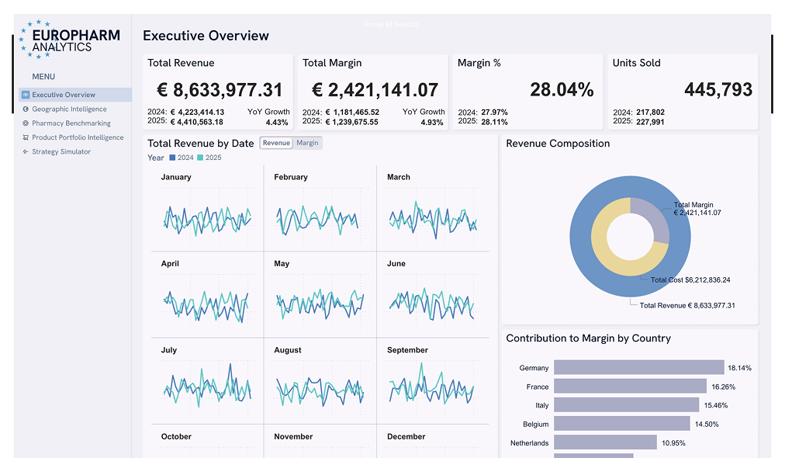
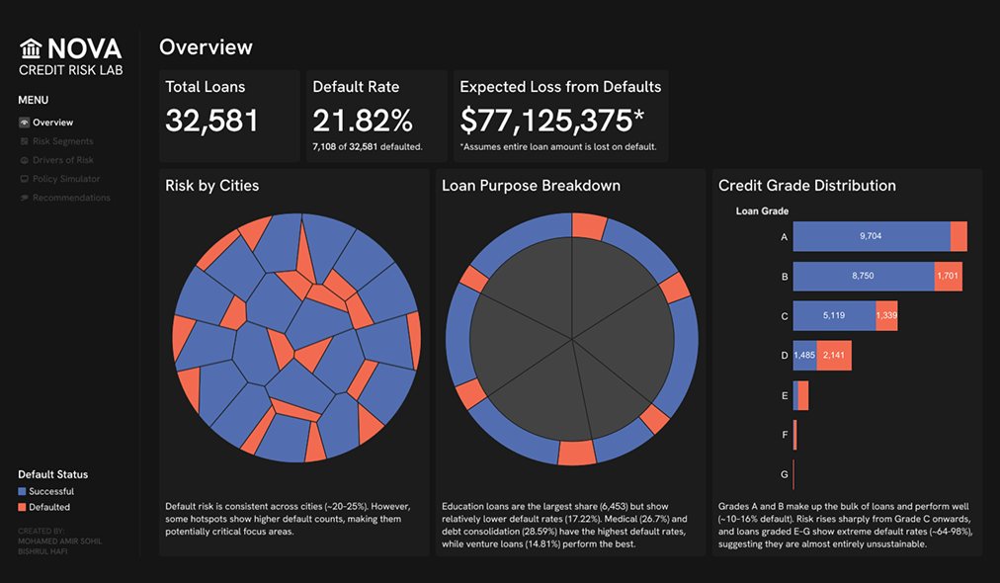
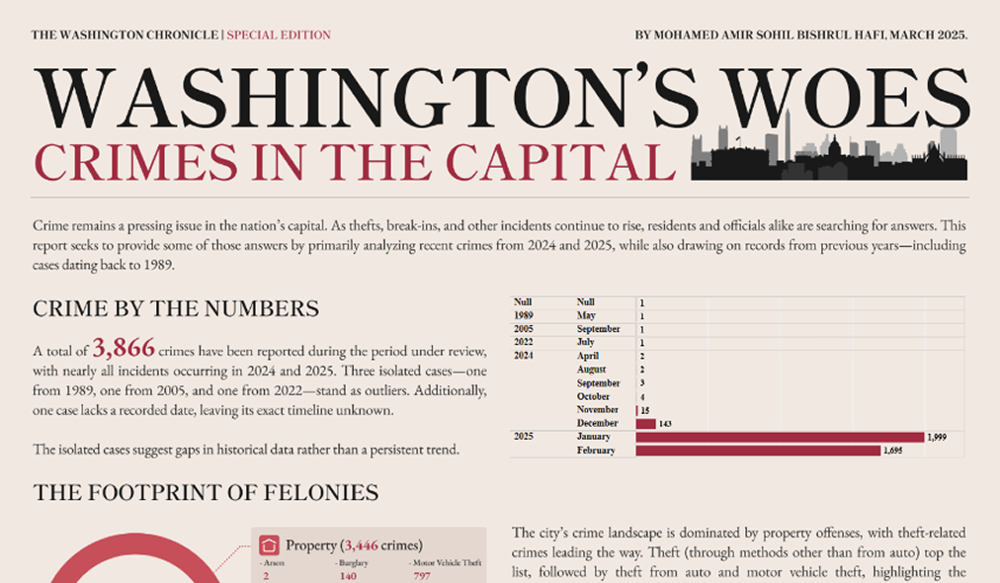
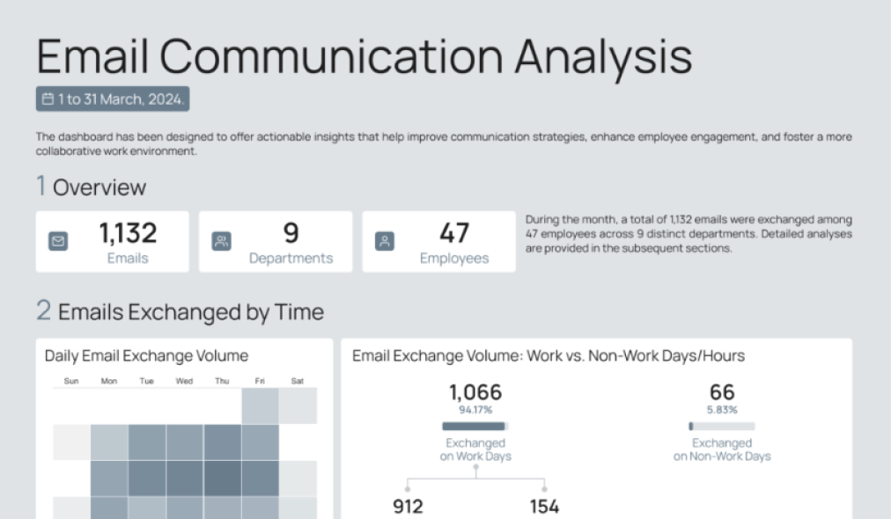
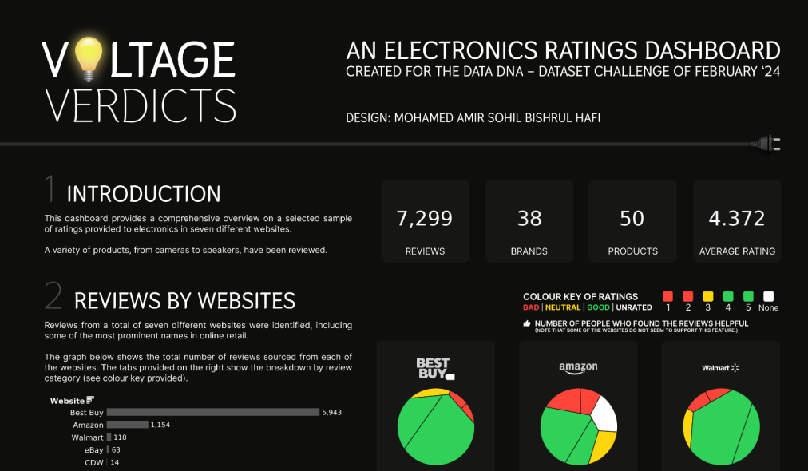
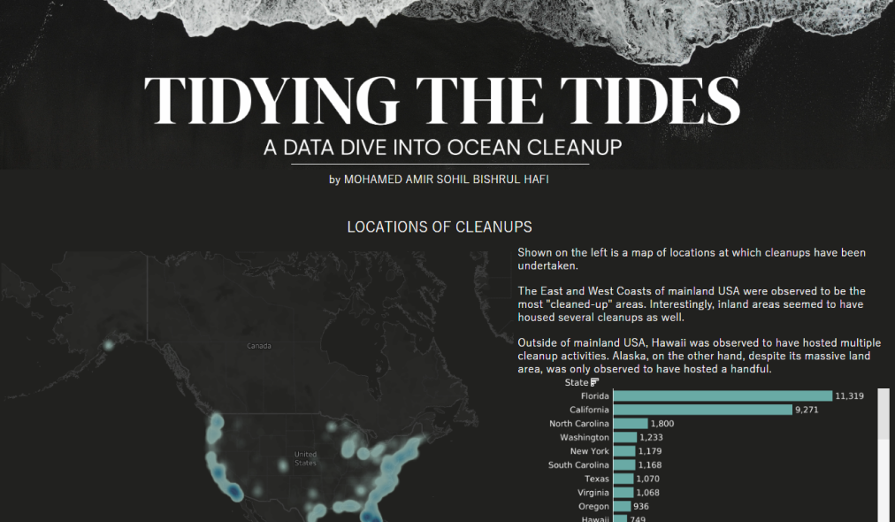
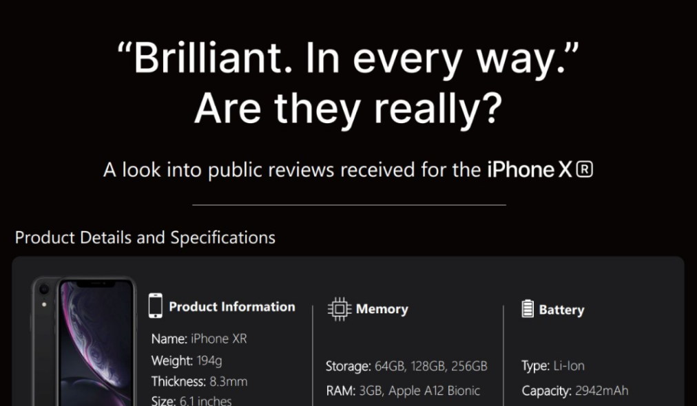
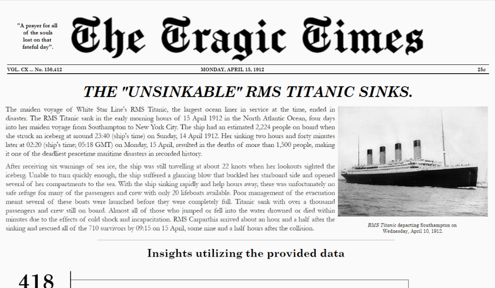
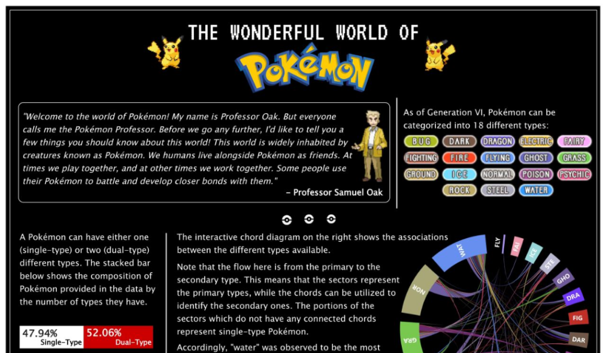
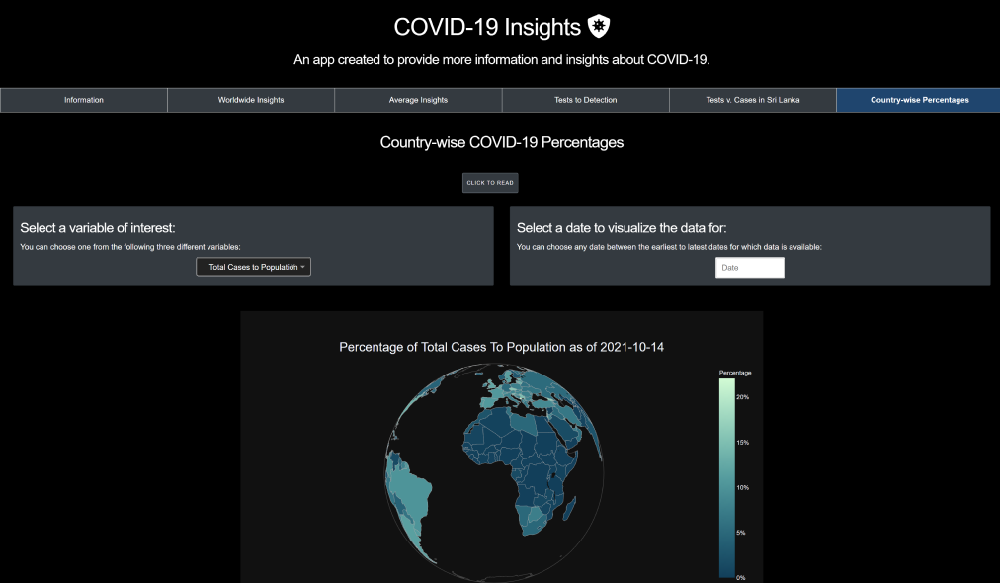

EuroPharm Analytics
A decision-intelligence dashboard transforming pharmacy sales data into strategic insight. This solution integrates benchmarking, portfolio analytics, and simulation to drive profit-focused decision-making.
See moreClick here to chat with my portfolio.

A decision-intelligence dashboard transforming pharmacy sales data into strategic insight. This solution integrates benchmarking, portfolio analytics, and simulation to drive profit-focused decision-making.
See more
A credit risk analytics system built around an XGBoost model and a custom profit proxy. Includes pipelines for preprocessing, a policy simulation tool, and an ethics-by-design approach that excludes sensitive features to ensure fairer, principle-aligned decisions.
See more
A newsroom-style deep dive into Washington D.C. crime patterns, blending geospatial mapping, temporal analysis, UCR classifications, etc. into a single investigative visual narrative.
See more
A multi-layer analytical dashboard exploring emails across a company's departments. Covers time-based patterns, sentiment, topics, departmental flows, and employee-level communication networks to reveal engagement, workload insights, and organisational dynamics.
See more
An analytical dashboard built from online electronics reviews across seven major retailers. Explores rating patterns by website, brand, category, recommendation status, product attributes, and inter-brand/category networks to reveal customer sentiment and product performance trends.
See moreData-driven models that evaluate player performance across Europe's top five leagues to generate objective Team of the Season squads, outperforming human-selected FIFA TOTS lineups using statistical metrics and a custom UEFA-based evaluation system.
See more
A comprehensive visual exploration of ocean cleanup efforts across the US, analysing cleanup locations, trash volume, item types, seasonal patterns, and correlation behaviour across 19 million collected items. Highlights geographical contrasts, volunteer activity, and material trends that shape marine pollution.
See more
A deep dive into 5,010 Amazon reviews of the iPhone XR, analysing star ratings, sentiment, helpfulness behaviour, review length patterns, and temporal trends to uncover how real customers responded to Apple's "Brilliant. In every way." claim.
See more
A historically styled analytical report exploring how class, age, gender, and fare influenced survival among 418 Titanic passengers. Visualised as a 1912 newspaper, this dashboard uncovers stark patterns in mortality, privilege, and demographic vulnerabilities during one of history's deadliest maritime disasters.

A comprehensive analysis of Pokémon types, stats, and battle dynamics, paired with interactive visuals, to uncover patterns and build optimal teams
See more
An interactive analytics app offering global, regional, and country-level insights into COVID-19 trends, testing effectiveness, and case dynamics using real-time data visualisation.
See more